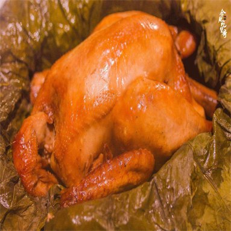
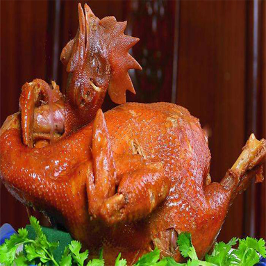
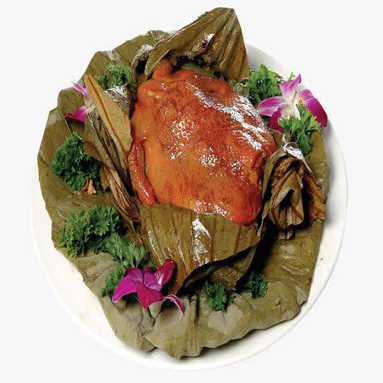

| 叫花鸡又称常熟叫化鸡、煨鸡，是江苏省常熟市的一道传统名菜，，其做法是先给处理好鸡刷上料汁，再用荷叶、猪网油及黄泥土层层包裹，最后丢进柴火堆中煨熟。 叫花鸡的制法与周代“八珍”之一的“炮豚”相似，“炮豚”就是用粘土把乳猪包裹起，加以烧烤，然后再进一步加工而成的菜。 其色泽枣红明亮，芳香扑鼻，板酥肉嫩，入口酥烂肥嫩，风味独特。 |
| ⊙小故事 | ||
| 相传，很早以前，有一个叫花子，沿途讨饭流落到常熟县的一个村庄。一日，他偶然得来一只鸡，欲宰杀煮食，可既无炊具，又没调料。他来到虞山脚下，将鸡杀死后去掉内脏，带毛涂上黄泥、柴草，把涂好的鸡置火中煨烤，待泥干鸡熟，剥去泥壳，鸡毛也随泥壳脱去，露出了熟的鸡肉。 | ||
|  |  |  |